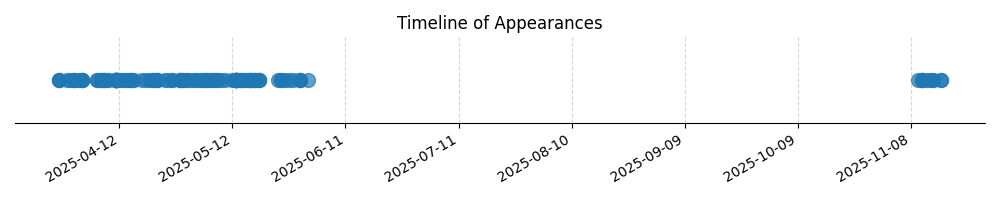

Kategorie: Principy letu
Letadla s podvozkem ostruhového typu (taildragger) mají hlavní kola vpředu a menší kolo (strupa) vzadu. Tato konfigurace obecně vede k nižší hmotnosti a menšímu aerodynamickému odporu ve srovnání s tříkolovým podvozkem (kde je příďové kolo), protože chybí složité mechanismy pro zatažení příďového kola a samotné příďové kolo a jeho podpěry také vytvářejí odpor. Proto je možnost C správná.

| Datum výskytu |
|---|
| 2025-11-16 |
| 2025-11-14 |
| 2025-11-13 |
| 2025-11-12 |
| 2025-11-11 |
| 2025-11-10 |
| 2025-06-01 |
| 2025-05-30 |
| 2025-05-28 |
| 2025-05-27 |
| 2025-05-26 |
| 2025-05-25 |
| 2025-05-24 |
| 2025-05-19 |
| 2025-05-18 |
| 2025-05-17 |
| 2025-05-16 |
| 2025-05-15 |
| 2025-05-14 |
| 2025-05-13 |
| 2025-05-12 |
| 2025-05-10 |
| 2025-05-09 |
| 2025-05-08 |
| 2025-05-07 |
| 2025-05-06 |
| 2025-05-05 |
| 2025-05-04 |
| 2025-05-03 |
| 2025-05-02 |
| 2025-05-01 |
| 2025-04-30 |
| 2025-04-29 |
| 2025-04-28 |
| 2025-04-26 |
| 2025-04-25 |
| 2025-04-24 |
| 2025-04-22 |
| 2025-04-21 |
| 2025-04-20 |
| 2025-04-19 |
| 2025-04-18 |
| 2025-04-16 |
| 2025-04-15 |
| 2025-04-14 |
| 2025-04-13 |
| 2025-04-12 |
| 2025-04-11 |
| 2025-04-09 |
| 2025-04-08 |
| 2025-04-07 |
| 2025-04-06 |
| 2025-04-02 |
| 2025-04-01 |
| 2025-03-31 |
| 2025-03-30 |
| 2025-03-29 |
| 2025-03-27 |